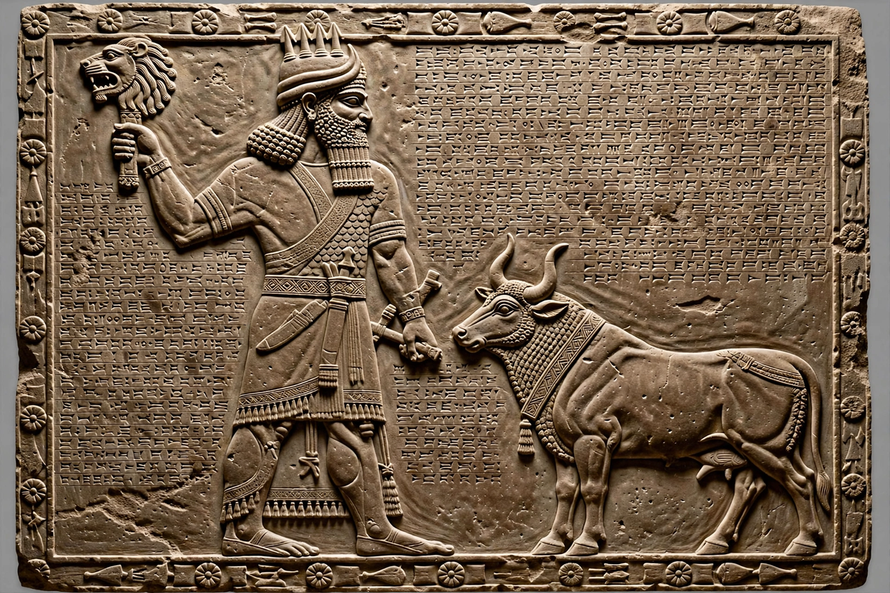

| God of | War, death, pestilence and the underworld |
|---|---|
| Abode | Kur (the underworld) |
| Planet | Mars |
| Symbol | Lion-headed mace, bull |
| Parents | Enlil and Ninlil |
| Consort | Ereshkigal |
| Center | Kutha (Cuthah) |

Nergal (Sumerian: dKIŠ.UNU; Aramaic: ܢܸܪܓܲܠ; Hebrew: נֵרְגַל) was a Mesopotamian god associated with war, death, pestilence and disease. He was originally worshipped primarily in the city of Kutha, where his great temple, the E-meslam, stood, and he gradually became one of the most prominent deities of the Babylonian and Assyrian pantheons.
Nergal was regarded as a son of Enlil and the goddess Ninlil. In astronomical tradition he was identified with the planet Mars, whose reddish colour was linked to bloodshed and destruction. His most famous myth, Nergal and Ereshkigal, recounts how he descended into Kur, the land of the dead ruled by the goddess Ereshkigal, and after a series of confrontations became her husband and co-ruler of the underworld. In the myth he is first sent as an envoy of the gods to a banquet of the dead, and his return journeys to the netherworld cement his role as a god who moves between the worlds of the living and the dead.
Nergal embodied the destructive heat of the summer sun and the fever of plague. As a god of war he was invoked by Assyrian kings before battle, and his standard accompanied armies on campaign. His attendants included the Sebitti, seven warrior gods, and demons of disease such as Namtar. Despite his fearsome nature he also had a protective aspect: amulets and incantations invoked him against the very evils he commanded.
Nergal appears in the Hebrew Bible (2 Kings 17:30) as a deity worshipped by settlers brought to Samaria from Cuthah. In later tradition his name survived in magical texts, and in astrology the association of Mars with war carried his symbolism into the classical world, where he was equated with Ares and Hercules in various syncretic interpretations.